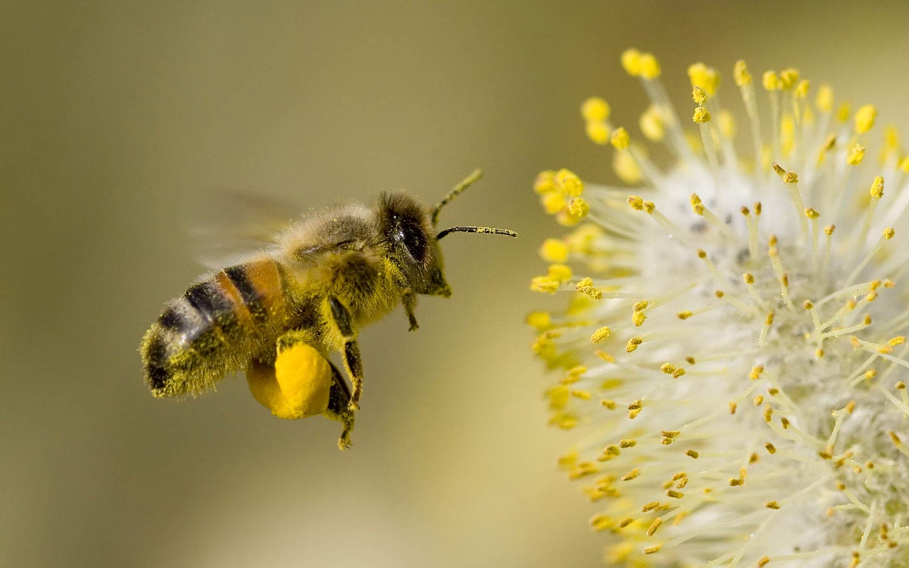
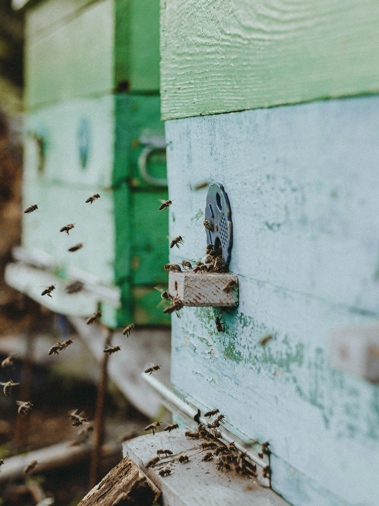
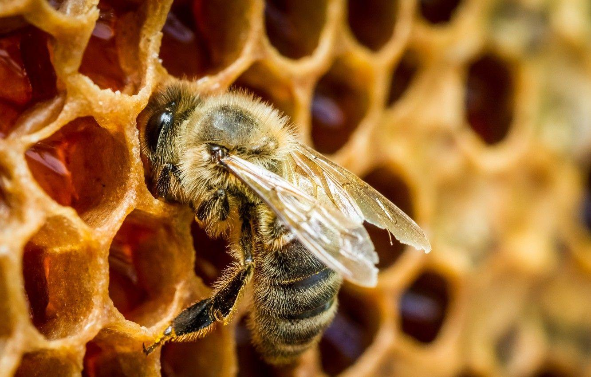

Welcome to the World of Bees
Discover the amazing life of bees and the important role they play in our world.



×

Discover the amazing life of bees and the important role they play in our world.